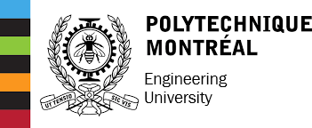

Frédéric Perron, B. Sc.
Bachelor of Science, Cybersecurity, Polytechnique Montreal
Baccalauréat ès Sciences, Cybersécurité, Polytechnique Montréal
Cybersecurity Professional | Helping Startups & Individuals Identify and Address Security Gaps | Open to Work — IT & Cybersecurity Opportunities
Professionnel en Cybersécurité | J'accompagne les startups et les particuliers dans l'identification et la réduction des risques de sécurité | Ouvert aux opportunités en TI et cybersécurité

Portfolio
Projects / Projets Personnels
- Internet Honeypot SOC Lab
- Home Network Segmentation for IoT & Security Devices
- Targeted Password List Generator for Educational and Testing purposes
Labs
School Assignments / Travaux d'école
🛡 Defensive Security / Sécurité Défensive
- Hardening SELinux & Windows
- Attack Tree — Databases & Masks — Certificates & Encryption — Management with SQL Management Studio
- Threat Modeling and Risk Assessment in applicative security with STRIDE framework
- Elastic — Tcpdump — Wireshark — Tunnellisation ICMP et C&C
- File extraction/Extraction de fichiers — File decoding/Décodage de fichier — Sent Email Validation/Validation d'envoi d'e-mail — DKIM — SiLK — Suricata
- Honeypots/Pots de miel — Cyber Threat Hunting — RITA — Zeek — Windows Machine Investigation — Malware Analysis/Analyse de Maliciel — File Analysis/Analyse de Fichier
- MITRE ATT&CK — Purple Teaming — Kibana — PowerShell
- Analyse de trafic ICS — Ladder Logic — Investigation Linux — Shodan — Metasploit & ModbusPal
- Analyse PDF malicieux — Sandbox Cuckoo — IOC & YARA — Forensic & Redline
⚔ Offensive Security / Sécurité Offensive
- Infrastructure Recon — Third-Party Service Recon
- Metasploit — Password Cracking — Password Attacks — Responder & JohnTheRipper — Pivoting & Persistence
- DLL Hijacking — PingCastle — Bloodhound — Local Privilege Escalation
- SQL Injection — Authentication — Directory Traversal — OS Command Injection — Business Logic Vulnerabilities — Information Disclosure — Access Control — Server-side request forgery (SSRF) — XXE Injection — XSS (Cross-site scripting)
Certifications
Contact
About Me / À propos
I’m Frédéric Perron, a cybersecurity bachelor graduate from Polytechnique Montréal (2025) with a background in aviation security at Ottawa International Airport. I transitioned from physical/aviation security to cybersecurity to focus on protecting systems at scale—combining both my passions; security and technology/computers.
My experience covers network analysis, system hardening, threat modeling, vulnerability assessment, and both offensive and defensive security. I’ve worked with tools and environments across virtualized systems, cloud platforms, and databases, applying real-world attack scenarios to identify weaknesses and implement practical defenses.
I approach security from an adversarial mindset—understanding how systems break and designing them to be resilient. I’m also familiar with frameworks such as NIST CSF, MITRE ATT&CK, STRIDE, and COBIT, which I use to structure assessments and consulting work.
I’m particularly interested in helping startups and non-technical teams improve their security posture, prepare for audits, and build strong foundations before scaling. Refer to my "projects" and "my services" sections to learn more about my works and consulting services.
My Services / Mes Services
Who I Work With
- Individuals
- Freelancers
- Startups
- Small Businesses
- Non-Profit Organizations
Personal Cybersecurity
Help individuals improve their everyday digital security through practical guidance and personalized recommendations.
Services:
- Personal security assessments
- Password manager setup and guidance
- Multi-factor authentication (MFA) setup
- Email account security review
- Device security review
- Privacy and online safety recommendations
- Secure backup guidance
- Home Wi-Fi security recommendations
- Digital security best practices
Cybersecurity Assessments
Help organizations understand their current security posture and identify practical improvements.
Services:
- Security posture reviews
- Security hygiene assessments
- Risk identification
- Security gap assessments
- Security readiness evaluations
- Actionable remediation recommendations
Compliance & Framework Readiness
Assist organizations preparing for cybersecurity frameworks and security best practices.
Services:
- NIST Cybersecurity Framework (CSF) gap assessments
- SOC 2 readiness assessments
- Security documentation reviews
- Audit preparation guidance
- Security maturity recommendations
Security Policies & Governance
Help organizations establish foundational security documentation and processes.
Services:
- Security policy development
- Incident response plan guidance
- Basic governance recommendations
- Security process documentation
- Security best practice recommendations
Security Awareness
Improve security awareness for individuals and organizations.
Services:
- Phishing awareness
- Social engineering awareness
- Cybersecurity best practices
- End-user security education
- Security culture recommendations
My Approach
I help individuals, startups, and small organizations strengthen their cybersecurity through practical assessments, straightforward recommendations, and real-world guidance.
My focus is on making cybersecurity understandable, actionable, and accessible—whether you're protecting your personal accounts, launching a startup, or improving your organization's security posture.
Every assessment includes clear findings, prioritized recommendations, and practical next steps rather than technical jargon.
Clientèles desservies
- Particuliers
- Freelancers
- Startups
- Petites entreprises
- Organisations à but non lucratif
Cybersécurité personnelle
Aider les particuliers à améliorer leur sécurité numérique au quotidien grâce à des conseils pratiques et des recommandations personnalisées.
Services :
- Évaluations de sécurité personnelle
- Mise en place et conseils pour les gestionnaires de mots de passe
- Mise en place de l'authentification multifacteur (MFA)
- Révision de la sécurité des comptes courriel
- Révision de la sécurité des appareils
- Recommandations en matière de confidentialité et de sécurité en ligne
- Conseils pour la sauvegarde sécurisée
- Recommandations pour la sécurité du Wi-Fi domestique
- Bonnes pratiques en cybersécurité numérique
Évaluations en cybersécurité
Aider les organisations à comprendre leur posture de sécurité actuelle et à identifier des améliorations concrètes.
Services :
- Révisions de la posture de sécurité
- Évaluations d'hygiène de sécurité
- Identification des risques
- Évaluations des écarts de sécurité
- Évaluations de préparation à la sécurité
- Recommandations concrètes de remédiation
Conformité et préparation aux cadres de référence
Aider les organisations à se préparer aux cadres de cybersécurité et aux bonnes pratiques de sécurité.
Services :
- Évaluations des écarts selon le cadre NIST Cybersecurity Framework (CSF)
- Évaluations de préparation à SOC 2
- Révisions de la documentation de sécurité
- Accompagnement pour la préparation aux audits
- Recommandations en matière de maturité de sécurité
Politiques de sécurité et gouvernance
Aider les organisations à établir des documents et des processus de sécurité fondamentaux.
Services :
- Élaboration de politiques de sécurité
- Accompagnement pour le plan de réponse aux incidents
- Recommandations de gouvernance de base
- Documentation des processus de sécurité
- Recommandations en matière de bonnes pratiques de sécurité
Sensibilisation à la sécurité
Améliorer la sensibilisation à la sécurité pour les particuliers et les organisations.
Services :
- Sensibilisation aux hameçonnages
- Sensibilisation à l'ingénierie sociale
- Bonnes pratiques en cybersécurité
- Éducation à la sécurité des utilisateurs finaux
- Recommandations de culture de sécurité
Mon approche
J'aide les particuliers, les startups et les petites organisations à renforcer leur cybersécurité grâce à des évaluations pratiques, des recommandations claires et des conseils concrets.
Je m'efforce de rendre la cybersécurité compréhensible, actionnable et accessible, que vous protégiez vos comptes personnels, lanciez une startup ou amélioriez la posture de sécurité de votre organisation.
Chaque évaluation comprend des constats clairs, des recommandations priorisées et des prochaines étapes concrètes, plutôt que du jargon technique.